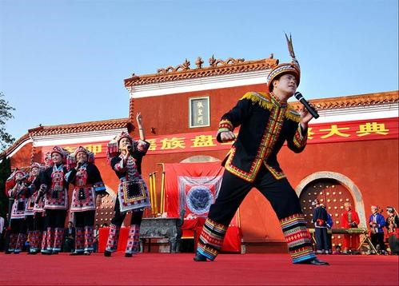
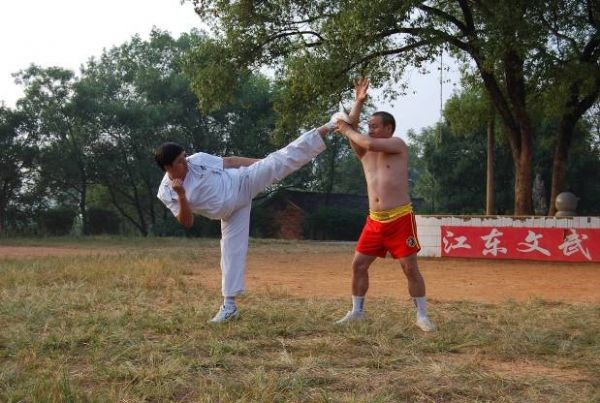

《盘王大歌》是一部瑶族民间的诗歌总集。主要流传在南岭山脉以江华为主的瑶族居住地区，是瑶族人民世世代代祭祀盘王的礼仪活动和在生产、生活中创作产生并不断发展丰富的古歌史曲。它始作于原始社会，雏形于晋代，形成于唐宋，成熟于明末清初。清乾隆年间发现了最早的《盘王大歌》手抄本，手抄本有十二段词、二十四段词和三十六段词三种，每一段都有三千多行以上。由绪歌、插歌、正歌和杂歌组成，内容主要包括瑶族先民的自然观、人类起源说、瑶族的产生与迁徙、瑶族的婚恋、瑶族的创业史，是瑶族社会中的一部“百科全书”。
被誉为瑶家“歌妈”的赵庚妹于1950年出生在江华的一个瑶族民间艺人世家，《盘王大歌》为自家祖传，到赵庚妹已经传到第11代。8岁时就跟祖父学唱瑶歌，到10岁时，赵庚妹在当地就已经小有名气。 1965年，赵庚妹进入江华瑶族自治县民族歌舞团（现名：永州市民族歌舞团）。1965年，江华瑶族自治县举行10周年县庆，赵庚妹主持坐歌堂和唱瑶歌，在之后每隔10周年的县庆都会有赵庚妹参加。哪家嫁娶，或是赶场、赶圩，以及村子里的祭祀活动，也都会邀请赵庚妹唱歌。去年9月，永州市选送的原生态瑶歌《盘王大歌》参加湖南省“欢乐潇湘”活动获得一等奖，赵庚妹在其中扮演瑶族老太太。
东安武术源于三国时期的峨嵋拳，至今已有1700余年的发展演变历史。东安历代武师吸收少林拳、黑虎拳、蜘蛛拳之精华兼大胆创新，使东安武术在南方武术各流派中脱颖而出，独树一帜。目前主要流布于东安县水岭、大庙口、鹿马桥、石期市、紫溪市、井头圩、大盛、芦洪市、端桥铺、白牙市等乡镇。 东安自古便有“外出拜师学艺，请师到家授徒”的传统习惯，在湘南一带享有“打不过东安”的美誉。建国以后，东安武术运动提高与普及并举，优秀武术运动员层出不穷，多次参加全省、全国武术比赛，共获奖牌186枚，先后向湖南省武术专业队输送优秀运动员23人，考入大专院校近200人。东安县先后荣获“全国武术之乡”（1992）、“全国群众体育先进单位”（2001）、“全国全民健身先进单位”（1997）、“湖南武术之乡”（1984）、“湖南省民间武术挖掘整理先进集体”（1986）等光荣称号。
东安武术内涵丰富，风格独特，影响巨大，对于增强人民体质，丰富竟技活动，提高民族自信心，展现民族文化创造力，都具有重要的价值和意义。作为传统体育项目的东安武术，近年来因文化多样化、经济全球化等各种原因的影响，生存环境逐渐恶化，武术活动、武术人才、武术会馆急剧减少，传承后继乏人，一些武术绝技、绝学等濒临失传边缘，其现状令人担忧，保护的形势十分严峻。现急需采取有力的、可行的保护措施，使东安武术得到继续传承和发扬光大。
舜帝祭典，湖南省宁远县传统民俗，国家级非物质文化遗产之一。 舜帝祭典的主要活动地在湖南省宁远县，望祭舜帝始于大禹，止于汉武帝。现代的舜帝陵祭典活动以“尊祖爱国、传承文明，凝聚人心、 促进发展”为主题，
2008年6月7日，瑶族长鼓舞经国务院批准列入第二批国家级非物质文化遗产名录。 长鼓舞是流传在永州江华瑶族自治县及邻近瑶族地区，具有鲜明的民族特色和地方色彩的民族民间舞蹈
祁剧，也叫“祁阳戏”、“楚南戏”，因发祥于湖南省祁阳县而得名。是湖南省传统地方戏剧剧种，国家级非物质文化遗产之一。 明代中叶，弋阳腔传入祁阳，与当地的民歌、小调相结合，形成了祁剧的雏形。在发展过程中，祁剧形成了永河、宝河两大流派，但均使用祁阳官话进行表演。祁剧唱腔中包含高、昆、弹三种声腔，演唱声调高亢嘹亮，辅以高音战鼓、帽形燥鼓、硬弓祁胡等乐器伴奏。在此状况下，须生演唱时用沙音以显苍老，小生用子音以显文秀，旦角用窄音以显秀媚，花脸用霸音或喝音以显粗豪。
2008年6月7日，祁剧经中华人民共和国国务院批准列入第二批国家级非物质文化遗产名录